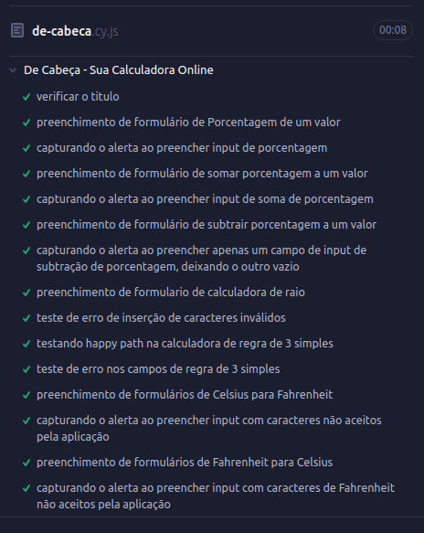

De Cabeça - Sua Calculadora Online
28/01/2025
De Cabeça - Sua Calculadora Online
Desde meu início em estudos de programação, Python, Java, PHP, C, JavaScript, o que eu mais gosto de fazer são calculadoras. Um passatempo meu hoje é quebrar a cabeça para ensinar a máquina a resolver cálculos matemáticos para o usuário tornando a sua rotina mais prática.
Tenho a ciência de que estou fazendo mais do que já se tem na internet aos montes, mas sinto a necessidade de fazer a minha versão das calculadoras que julgo pertinentes, de disposição de interações com o usuário, como entradas e saídas, da organização dos elementos em tela, e de algoritmos necessários para chegar ao resultado.
De início será lançada uma calculadora de porcentagem com interações de cálculo de porcentagem de um número e cálculo de soma e subtração de porcentagens. Também nesse lançamento está entregue uma calculadora de dimensões de um circulo e esfera através de uma medida de raio. O usuário deve digitar a medida do raio, escolher a unidade trabalhada e mandar calcular, terá como saída os resultados de diâmetro, circunferência, área do circulo, área da esfera, e volume da esfera.
O site está desenvolvido em uma página única onde o usuário poderá fazer uma rolagem até onde quiser calcular, ou utilizar o menu fixado no topo da página com endereçamento das secções.
De Cabeça - Sua Calculadora Online
GitHub do Projeto
31/01/2025
Implementada Calculadora de Regra de Três Simples
Atualização do site, implementação da calculadora de regra de três simples. Você deve fornecer os campos A, B e C: A está para B assim como C está para X. Clicando em calcular, executa o algoritmo para a obtenção de X.
Commit da Atualização
07/02/2025
Implementada Secção de Conversores
Atualização onde foi adicionada a secção de conversores. Inicialmente com conversores de Km para Milha e Celsius para Fahrenheit e vice versa. Optado por manter as conversões de forma linear facilitando a procura com a rolagem da tela. Também adicionado um endereçamento para ela no menu do site.
Commit da Atualização
11/03/2025
Execução de Testes Automatizados com Cypress no Site 'De Cabeça'
Durante o processo de desenvolvimento do site De Cabeça, os testes sempre são feitos para garantir que os algoritmos estejam corretos, assim como os botões e inputs estejam atuando corretamente. Avançando em meus estudos de Cypress, desenvolvi uma bateria de testes automatizados para todos os campos do site, testando:
- Validação de acesso ao site correto, através do título
- Preenchimento correto dos inputs
- Preenchimento incorreto dos inputs com caracteres inválidos
- Acionamento de botões sem preenchimento de inputs
- Disparo de alertas
Os códigos de teste são voltados para uma cópia localizada na máquina para não sobrecarregar o host, mas também executo o teste online para validação final.

Bateria de testes rodando em 8 segundos
Código fonte dos comandos executados com Cypress